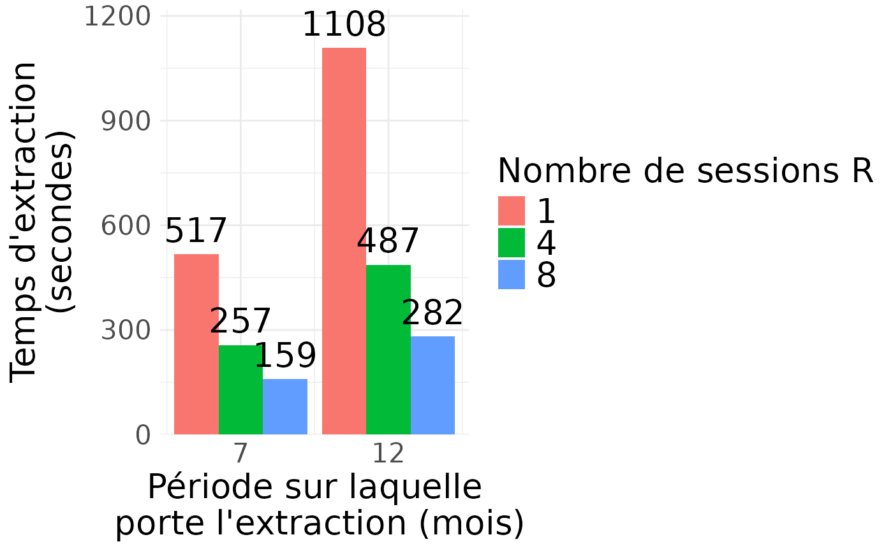

Benchmarking requête en parallèle avec R
Matthieu Doutreligne
2026-03-17
Source:vignettes/benchmark_r_parallelism.Rmd
benchmark_r_parallelism.RmdMotivation
Le portail de la CNAM permet d’instancier plusieurs sessions R en parallèle. Il est possible de tirer parti de cette fonctionnalité pour accélérer les requêtes d’extraction de données, notamment dans le DCIR, lorsqu’il faut faire des extractions par mois de flux, comme le fait la magic loop.
Notre approche est de diviser la période d’étude en mois de flux,
puis d’assigner la requête pour chaque mois à une session R différente,
en utilisant la fonction parallel::parLapply. Cela permet
d’exécuter plusieurs requêtes en parallèle, réduisant ainsi le temps
total d’extraction.
Techniquement, l’utilisateur appelle la fonction principale (par ex.
extract_drug_erprsf) en lui passant ses filtres et
paramètres d’extraction. Cette fonction appelle ensuite
parallelize_query_by_flx_month, une fonction utilitaire qui
gère la parallélisation, en lui passant la fonction de construction de
requête pour chaque mois de flux (par exemple
.extract_drug_by_month).
Benchmark
On reprend le benchmark de la vignette Benchmark dplyr vs RSQL.
Code
source(here::here("sndsTools.R"))
# Paramètres d'extraction
atc_cod_starts_with_filter <- c("M05BB03", "M05BB04", "A11CC05", "A11CC01", "A12CD51")
cip13_cod_filter <- c(
3400935657190, 3400936584969, 3400936923751, 3400934880254)
# Colonnes supplémentaires pour la fonction `extract_drug_dispenses`.
sup_columns <- c(
"BEN_CMU_TOP",
"BEN_AMA_COD",
"BEN_SEX_COD",
"BEN_RES_DPT",
"FLX_DIS_DTD",
"PRS_ACT_QTE",
"BSE_REM_MNT",
"BSE_PRS_NAT",
"ETE_IND_TAA",
"ETB_EXE_FIN",
"ETE_MCO_DDP",
"PHA_GRD_CND",
"PHA_PRS_IDE",
"PHA_DEC_TOP",
"PHA_DEC_QSU"
)
start_dates <- rep(as.Date("2020-01-01"), 1)
end_dates <- c(
as.Date("2021-01-01")
)
#
# R-level parallelism cores to test
r_cluster_levels <- c(1, 4, 8)
path2benchmark <- file.path(
here::here("inst", "extdata", "benchmark_r_parallelism.csv"))
dir.create(dirname(path2benchmark), recursive = TRUE)
first_iter <- TRUE
for (i in seq_along(start_dates)) {
start_date <- start_dates[i]
end_date <- end_dates[i]
message("Extraction pour la période : ", start_date, " - ", end_date)
for (r_cluster_cores in r_cluster_levels) {
conn <- connect_oracle()
# Format table names
formatted_study_dates <- glue::glue(
'{format(start_date, "%Y%m%d")}_{format(end_date, "%Y%m%d")}')
output_table_name <- glue::glue(
"dplyr_r_parallel_{r_cluster_cores}_{formatted_study_dates}")
message("Extraction avec R parallelism : ", r_cluster_cores, " cores")
# Benchmark with R-level parallelism
time_0 <- Sys.time()
extract_drug_erprsf(
start_date = start_date,
end_date = end_date,
atc_cod_starts_with_filter = atc_cod_starts_with_filter,
cip13_cod_filter = cip13_cod_filter,
output_table_name = output_table_name,
sup_columns = sup_columns,
conn = conn,
r_cluster_cores = r_cluster_cores
)
time_taken <- as.numeric(
lubridate::as.duration(Sys.time() - time_0), "seconds")
# Get result count
n_rows <- DBI::dbGetQuery(
conn, glue::glue("select count(*) from {output_table_name}"))
# enregistrement des résultats
tmp_timing_results <- data.frame(
start_date = as.character(start_date),
end_date = as.character(end_date),
r_cores = r_cluster_cores,
time_taken_seconds = time_taken,
n_rows = n_rows[[1]]
)
# Drop the temporary table
on.exit(DBI::dbExecute(conn, glue::glue("DROP TABLE {output_table_name}")))
# Write results to CSV
write.table(
tmp_timing_results,
path2benchmark,
append = !first_iter,
row.names = FALSE,
col.names = first_iter,
sep = ","
)
first_iter <- FALSE
conn |> DBI::dbDisconnect()
}
}Résultats
path2benchmark <- file.path(
here::here("inst", "extdata", "benchmark_r_parallelism.csv"))
results <- read.csv(path2benchmark) |>
dplyr::mutate(
`Nombre de mois requêtés` = floor(as.numeric(as.Date(end_date) - as.Date(start_date)) / 30),
r_cores = factor(r_cores)
)
results |> knitr::kable()| start_date | end_date | r_cores | time_taken_seconds | n_rows | Nombre de mois requêtés |
|---|---|---|---|---|---|
| 2020-01-01 | 2020-08-01 | 1 | 516.8750 | 25404440 | 7 |
| 2020-01-01 | 2020-08-01 | 4 | 256.8322 | 25404440 | 7 |
| 2020-01-01 | 2020-08-01 | 8 | 159.1151 | 25404440 | 7 |
| 2020-01-01 | 2021-01-01 | 1 | 1108.1031 | 48131314 | 12 |
| 2020-01-01 | 2021-01-01 | 4 | 486.6644 | 48131314 | 12 |
| 2020-01-01 | 2021-01-01 | 8 | 281.5012 | 48131314 | 12 |
# graph
library(ggplot2)
x_breaks <- results$`Nombre de mois requêtés` |> unique() |> sort()
label_size <- 20
dodge_width <- 4.5
results |>
ggplot(
aes(x = `Nombre de mois requêtés`, y = time_taken_seconds, fill = r_cores)) +
geom_col(position = position_dodge(width = dodge_width)) +
geom_text(
aes(label = round(time_taken_seconds, 0)),
position = position_dodge(width = dodge_width),
vjust = -0.5,
size = 7
) +
scale_x_continuous(breaks = x_breaks) +
scale_y_continuous(expand = expansion(mult = c(0, 0.1))) +
scale_fill_discrete() +
labs(
x = "Période sur laquelle\n porte l'extraction (mois)",
y = "Temps d'extraction\n(secondes)",
fill = "Nombre de sessions R"
) +
theme_minimal() +
theme(
text = element_text(size = label_size),
axis.title = element_text(size = label_size),
legend.title = element_text(size = label_size),
legend.text = element_text(size = label_size)
)